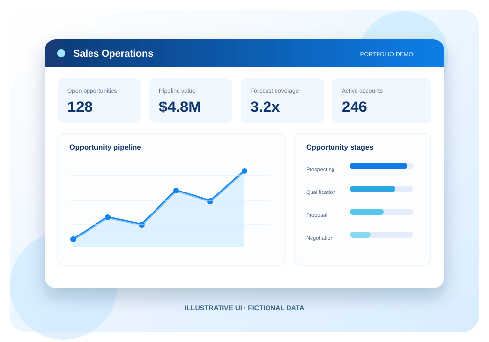

Solution architecture
Technical design, data modeling, security, integration patterns, scalability and governor-limit-aware engineering.
Nearly 8 years of enterprise Salesforce experience across CRM implementations, custom engineering, integrations, solution architecture and technical delivery leadership.

I combine architecture-level thinking with practical engineering—turning business requirements into secure, maintainable Salesforce solutions. My work spans implementation, enhancement, integration, performance and release delivery.
Technical design, data modeling, security, integration patterns, scalability and governor-limit-aware engineering.
Apex, Lightning Web Components, asynchronous processing, SOQL/SOSL and declarative automation.
Design reviews, code quality, mentoring, engineering standards, deployment coordination and delivery ownership.
Selected measurable outcomes from separate enterprise engagements across Manufacturing, Health and Experience Cloud. These figures describe different programs and should not be interpreted as results from one project.
Across enterprise Salesforce platforms and global patient support programs.
Large-scale Manufacturing Cloud warranty management environment.
Resilient enterprise REST integrations with structured logging, retries and idempotency.
Through scalable Apex, LWC, automation and transaction design.
Contributed through architecture, code and configuration reviews and engineering governance.
Through Salesforce DX, Git, Copado, CI/CD governance and automated quality gates.
Metrics are taken from my professional experience summary and project records. Outcomes are presented at an aggregate career level; individual results relate to their respective engagements.
A resume-backed view of the platforms, engineering disciplines and delivery practices I bring to complex Salesforce programs.
Cross-cloud implementation and delivery
Hands-on custom engineering
Connected, resilient enterprise systems
Secure access and data protection
Controlled delivery across environments
Scalability, reliability and maintainability
Technical direction across delivery teams
Supporting tools and delivery activities
Credentials listed on my resume
An anonymized case study based on the implementation scope confirmed for this portfolio. Client names, proprietary details and unsupported performance claims are excluded.
Sales operations · Opportunity lifecycle · Forecast visibility
Implemented Sales Cloud capabilities to support manufacturing sales operations, streamline account and opportunity management, improve pipeline visibility and support sales forecasting.
Open to remote freelance, contract and full-time opportunities in Salesforce development and technical leadership.